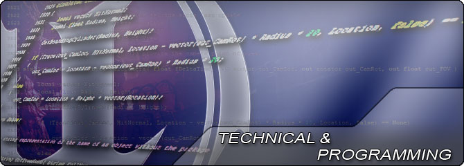
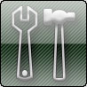

UDN
Search public documentation:
UDKProgrammingHomeCH
English Translation
日本語訳
한국어
Interested in the Unreal Engine?
Visit the Unreal Technology site.
Looking for jobs and company info?
Check out the Epic games site.
Questions about support via UDN?
Contact the UDN Staff
日本語訳
한국어
Interested in the Unreal Engine?
Visit the Unreal Technology site.
Looking for jobs and company info?
Check out the Epic games site.
Questions about support via UDN?
Contact the UDN Staff
UE3主页 > 技术 & 编程 主页

这些文档涵盖了设置引擎、扩展编辑器及创建新工具、及使用native代码和UnrealScript在虚幻引擎中编程的参考指南、技术指南和教学指南。-

关于编译及测试使用虚幻引擎3制作的游戏的信息。编译虚幻引擎3 - 虚幻编译工具 - 编译脚本 - Unreal Frontend - 分析及优化 - 统计数据命令 - 游戏性调试。 -
 关于打包及部署使用虚幻引擎3制作的游戏的相关信息。内容烘焙 - Unreal Frontend - 应用程序兼容 - UnrealDVDLayout 工具 - 磁盘安全 - UE3 Redist 。
关于打包及部署使用虚幻引擎3制作的游戏的相关信息。内容烘焙 - Unreal Frontend - 应用程序兼容 - UnrealDVDLayout 工具 - 磁盘安全 - UE3 Redist 。


- UnrealScript 参考指南 - UnrealScript编程语言的完整的参考指南。
- 自定义的UnrealScript 项目 - 创建新的UnrealScript项目。
- 基本游戏快速入门 - 创建一个空的游戏框架以便从此开始创建项目。
- UnrealFrontend - 关于使用UnrealFrontend多功能工具的指南。
- 游戏性编程 - 创建新的道具及元素以便在游戏中使用。
- AI & 导航 - 关于使用导航系统来创建AI（人工智能）的指南。
- 动画 - 关于使用导航系统创建AI的信息。
- 音频主页 - 关于UE3中的音频系统及使用音效相关信息的概述。
- 编译 & 发布 - 编译引擎的工具和技术。
- 命令行开关 - 关于在虚幻引擎3中使用及创建命令行开关的参考指南。
- 游戏机平台 - 针对游戏机平台的主题及针对PS3、Xbox 360和PS Vita (NGP)的相关信息。
- 游戏性元素 - 通过UnrealScript添加新的游戏性元素。
- 输入/ 输出 - 关于使用虚幻引擎3输入及输出数据的方法。
- 光照& 阴影 - 关于使用虚幻引擎3中的光照和阴影进行工作的指南。
- 材质 & 贴图 - 在虚幻引擎3中创建并使用材质。
- 内存系统 - 关于使用及分析UE3的内存系统的概述。
- 网络& 复制 - 关于UE3中的网络系统和复制的概述。
- 性能、分析 & 优化 - 用于在虚幻引擎3中分析游戏的技术。
- 物理 - 在虚幻引擎3中使用PhysX和物理仿真。
- 后期处理特效 - 在虚幻引擎3中应用全屏特效。
- 渲染子系统 - 关于虚幻引擎3中渲染通道的概述。
- UnrealScript 主页 - 关于UnrealScript编程语言的详细信息。
- 用户界面 & HUD - 创建用户界面，比如菜单和HUD。
- DirectX 11功能 - 虚幻引擎3中的DirectX 11渲染功能。
- 移动设备主页 - 使用虚幻引擎3开发针对移动设备平台的游戏。
- UDK 精华文章 - 关于各种主题的一系列的示例指南。